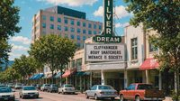
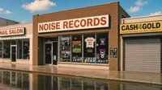
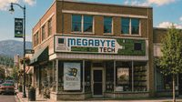
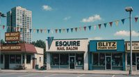

[#]Lost Hills Business Directory
A chamber-of-commerce listing of businesses, civic partners, and public-facing offices in Lost Hills. Listings are restored from backup; the «Archive Note» field was added during a later digitization pass and may differ from the original printed directory.
Selected Storefronts (1992–1993 photo file)




// photo files for the directory were digitized by Megabyte Computers under contract with the Clerk. Date of digitization not confirmed. // three storefronts in the file no longer match the businesses on record.
| Business | Public Description | Archive Note |
|---|---|---|
| Shadewater Laboratories 1 Shadewater Access Rd |
Applied research and civic systems campus. Founded 1978. Civic partner for CityNet, Continuity Grid, and the 1993 Systems Conference. See profile. | Public tours suspended after 05/17/1993. Staff directory withdrawn at request. Service road map missing from B12. |
| Sezzler Hotels & Resorts 1 Civic Center Way, downtown |
Lost Hills' conference and resort hotel. 312 rooms, conference halls, four restaurants. Host of the 1993 SASC. See profile. | Guest registry for May 1993 partially corrupted. Elevator maintenance log references floor B12. |
| Benthic Gas & Food Mart 2114 Catfish Lake Rd |
24-hour service station, lake permits, bait & tackle, hot food counter, payphone bank. | Payphones reported ringing without callers since 05/18/1993. Cashier complaint log withheld at request. |
| Northwestern Interstate Bank 21 East Plaza |
Regional bank, civic accounts, ATM modernization partner with Shadewater Labs. Lobby open M–F 09:00–16:30. | Two ATMs at North Plaza dispensed bills with serial numbers not issued by the U.S. Treasury (05/20/1993). Bills returned for verification. |
| Noise Records 8 North Plaza |
Independent record shop. New & used vinyl, cassettes, CDs, local artist consignments, listening booth. | Customers report voices audible beneath the music on several factory-sealed cassettes purchased after 05/17/1993. Owner offers refunds. |
| Summit Ski Shop 12 East Plaza |
Ski and outdoor gear, equipment rentals, regional trail maps, hiking and ski permits, guide services. | Regional maps printed after 05/19/1993 differ in lake-shore detail. Shop honors all printed permits. |
| Lost Hills Museum of Fine Art (MOFA) 4 Civic Center Way |
Regional art museum, civic arts programs, Shadewater-sponsored digital imaging exhibit. See profile. | Several digitized exhibit images display differently than the physical works. See "The Shape of Distance." |
| Woodchuck Inn 700 Old Mill Rd |
Family-run motel, 24 rooms, continental breakfast, AAA rated. Independent of Sezzler. | Guest in Room 7 reports same dream four nights running. Innkeeper requests removal of this note. |
| Catfish Lake Recreation Area south of city |
Municipal recreation, fishing, boating, picnic grounds, monitored swim area. Permits at Benthic. See profile. | Depth surveys exceed instrument range. Lights observed below surface 05/19–present. |
| Dum Dum's Donuts 3 North Plaza |
Family bakery since 1971. Glazed, cake, raised, fritters, cocoa, drip coffee. | Open 04:30 daily. No archive incidents on file. |
| Megabyte Computers 16 North Plaza |
Personal computers, modems, public access terminal program with the City of Lost Hills. | Customer reports a 14.4k modem dialing out by itself at 03:17 each night. Store has issued replacement. |
| Zevi 21 North Plaza |
Clothing and denim retail. Pacific Northwest outfitting, workwear, casual wear, boots. Established 1981. | Storefront photographed at North Plaza 05/19/1993; not present on 05/20. Photographer requests removal. |
| Silver Dream Theatre 5 East Plaza |
Two-screen cinema, marquee since 1959, Friday matinee discount. | Marquee showtimes posted ahead of release dates. Box office unable to honor printed schedule. |
| North Lost Hills Plaza North Plaza Center |
Open-air shopping plaza; anchor tenant Jeff's Supermarket. Public CityNet terminal in central kiosk. | Storefront map for May 1993 conflicts with current signage. ×north_lost_hills_plaza_map_1993.gif |
| Jeff's Supermarket North Plaza |
Full-service grocery, deli, pharmacy, late hours. Public CityNet terminal in foyer. | "Weekly circular printed two weeks ahead since 05/17." (note added by clerk during later audit; audit date not in archive) |
| Authentic Tech North Plaza, west wing |
Audio-visual retail, TVs, VCRs, camcorders. SASC public-floor exhibitor. | VHS tapes returned after 05/19 contain footage that was not recorded by the customer. |
| Auto World Old Mill Rd |
New & used vehicles, service bay, parts counter. Family business since 1962. | Customer odometer disputes filed: 4 (May 1993). Awaiting Clerk review. |
| Saigon Sisters Restaurant 17 East Plaza |
Family Vietnamese restaurant, pho specialty, lunch + dinner. Closed Tuesdays. | Owner reports the same guest at table 4 four evenings running, paying with bills dated 1989. |
| Fat Boys Subs 6 North Plaza |
Hot subs, cold subs, root beer on tap, party trays. | Conference catering award, May 1993 (Sezzler Pavilion C). |
| The Lost Hills newspaper 9 Civic Center Way |
Paper of record since 1902. Daily edition Mon–Sat; Sunday review. | Print suspended 199?. Online archive incomplete. See archive. |
| KLHL 1240 AM Civic Center Way |
Public radio, civic bulletins, agricultural reports, evening jazz. | Dead-air segment 03:17–03:18, every night since 05/18/1993. Engineer unable to locate cause. |
| Additional listings withheld pending Clerk review. Re-restored entries are not yet displayed. | ||
Civic Partners
[ Shadewater Labs ] [ Sezzler Resort ] [ Northwestern Interstate Bank ] [ Megabyte Computers ] [ The Lost Hills newspaper ]
UNDER CONSTRUCTION The directory's "Archive Note" column was added during a later audit and is not part of the original printed directory. Some entries appear to have been re-added after deletion.